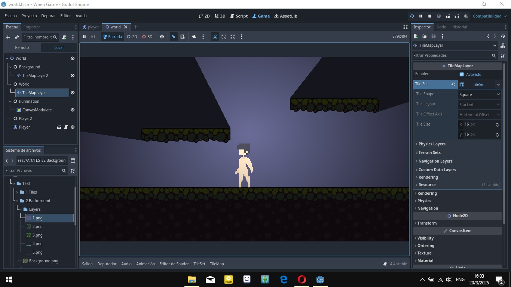

Descripción del Juego
"When" es un juego de terror que te sumerge en un mundo oscuro y misterioso. Explora entornos inquietantes en una ciudad devastada, resuelve acertijos, encuentra una manera eficiente de moverte y enfrenta tus peores miedos mientras intentas sobrevivir al cataclismo en que te encuentras y descubre la verdad sobre los eventos aterradores que te rodean.
Características
- Gráficos pixelart y atmósfera retro clásica
- Historia intrigante
- Desafíos y acertijos que pondrán a prueba tu ingenio
- Sonido envolvente que aumenta la tensión
Imágenes del Juego


¡Pronto Disponible!
Visita nuestra página para más información y actualizaciones sobre la fecha de lanzamiento.